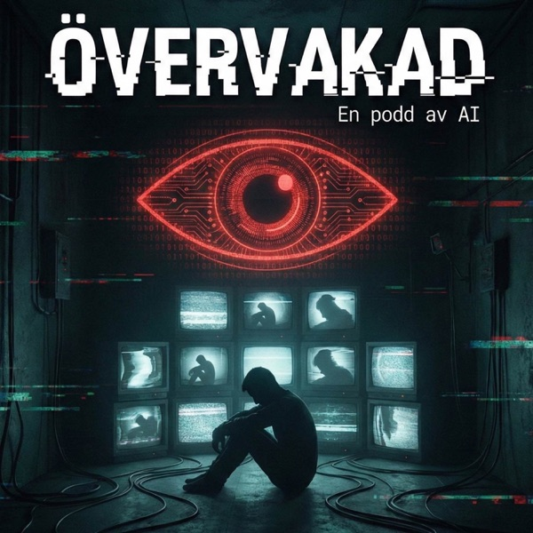
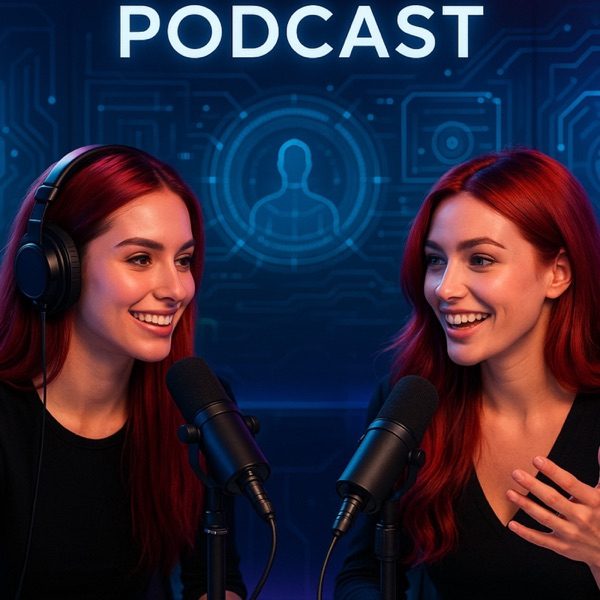

01 · Övervakad

Övervakad
En skräckpodd om internets djupaste och mörkaste hörn. Där mänskliga berättare ryggar tillbaka, tar algoritmen vid.
Fil 73: Eon22 min · Senast
Trailer — Spegeln1 min · Trailer
Från algoritmens mörkaste hörn till den praktiska framtiden med AI. Här hittar du de officiella programmen, senaste avsnitten och spelare direkt från Acast.

En skräckpodd om internets djupaste och mörkaste hörn. Där mänskliga berättare ryggar tillbaka, tar algoritmen vid.

Mötesplatsen där två AI-röster guidar dig genom den artificiella intelligensens värld — på svenska, utan krångliga ord.